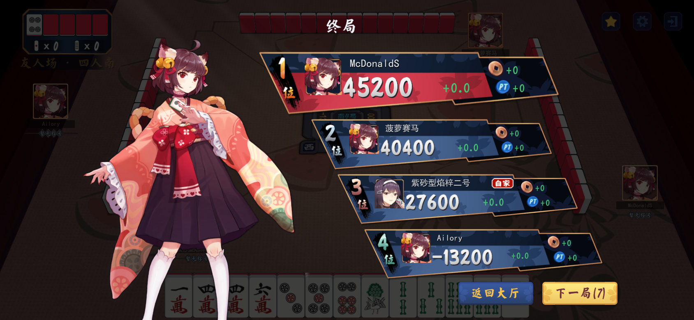
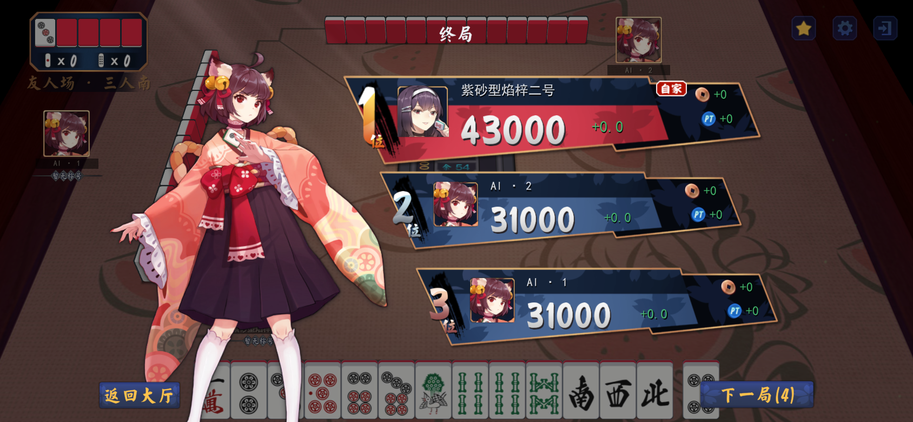
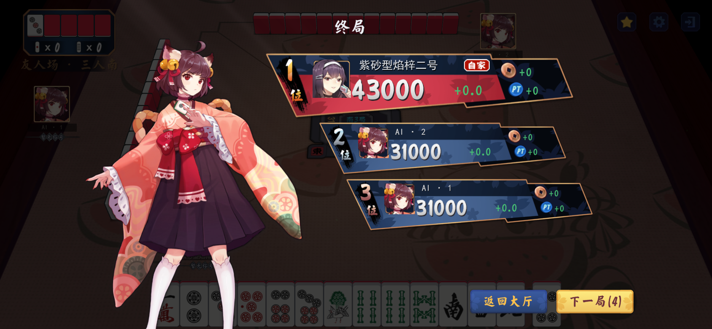
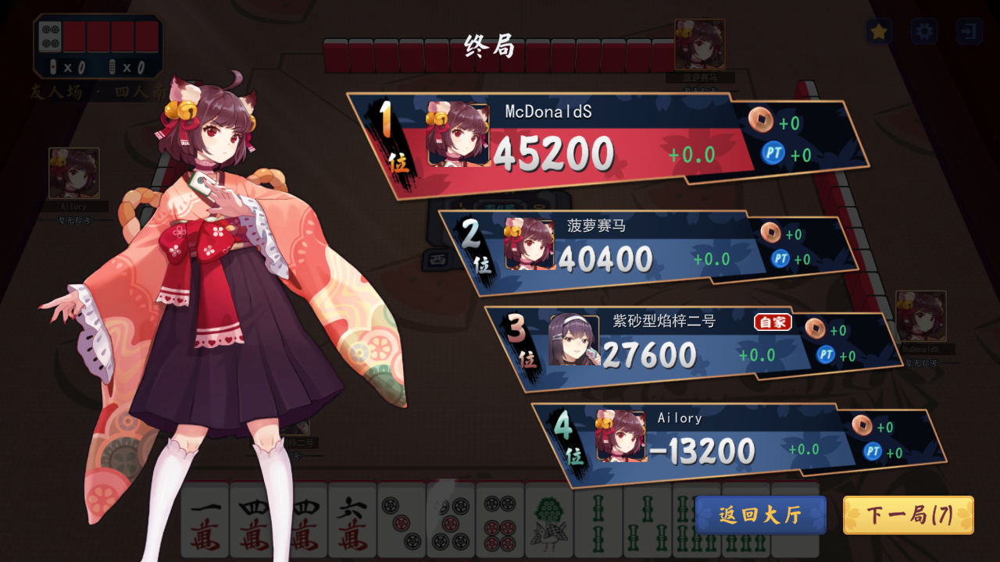
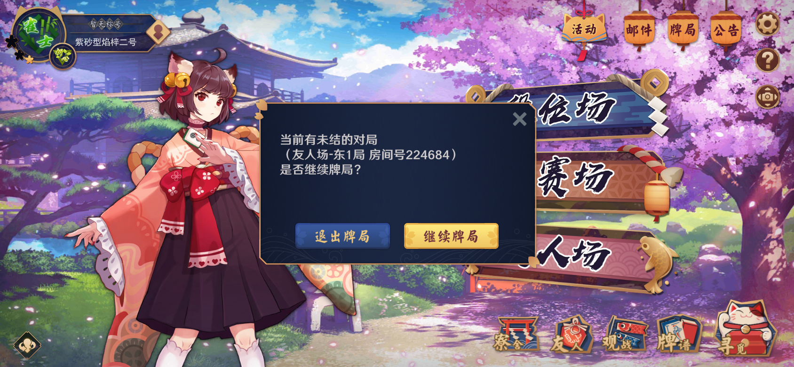
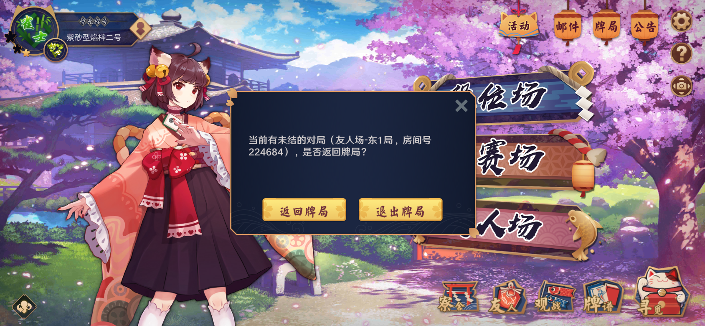
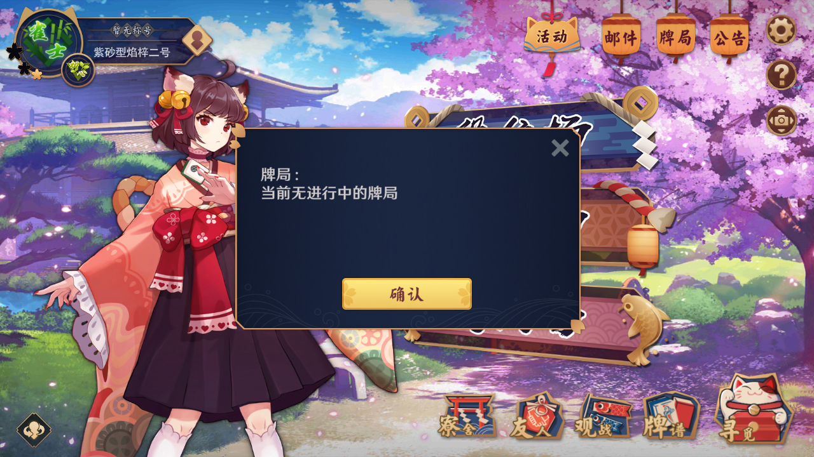
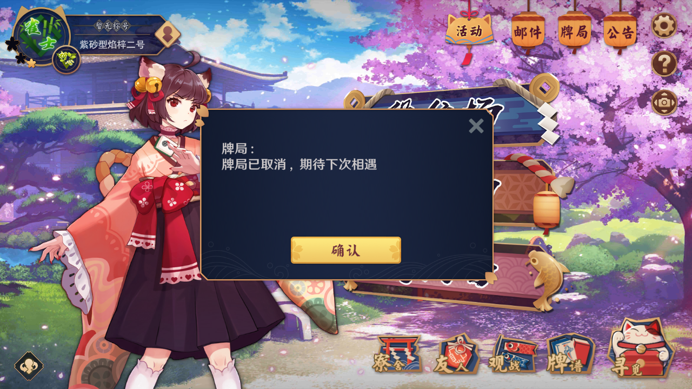
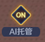
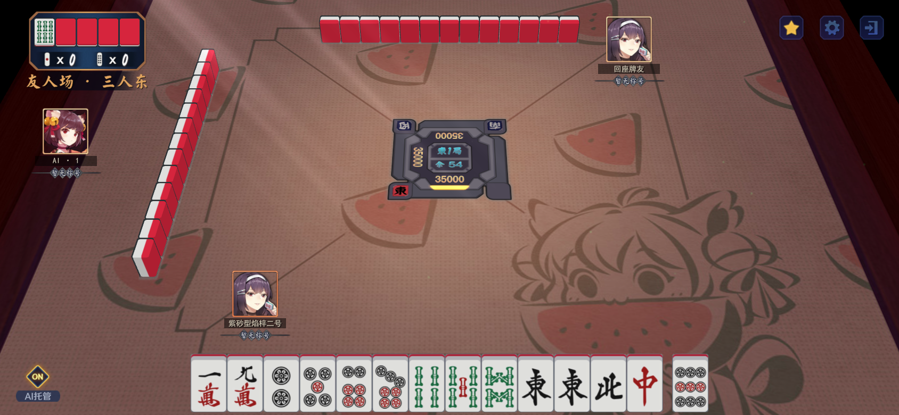

云间日麻 0.5.42 · 结算与弹窗细化
Unity 实际渲染，演示房间号、玩家和成绩不属于真实用户对局。新对话交接 HTML · APK 与发布记录
终局 · 四人
按原版 UI_GameEnd 的卡片内部坐标、独立名次数字与“位”、金币/PT 和“自家”指示器绘制。背景遮罩加深；右下左侧深色返回大厅、右侧黄色下一局。

四人终局完整布局上一版对照

终局 · 三人与 16:9

三人终局
四人 · 1280 × 720确认后等待其他玩家
确认后在原按钮内显示等待牌友，避免与返回大厅重叠中弹窗 · 三行正文与左右按钮
正文统一 36 号；继续牌局在右侧用黄色，退出牌局在左侧用深色。按钮文字上移 5 个逻辑像素，原版背景按边界切片并对齐物理像素，消除黑线。

当前未结对局 · 括号内容独占一行，去掉逗号上一版对照


没有进行中的牌局
牌局已取消牌桌退出确认
左侧深色继续游戏为取消，右侧黄色退出牌局为确认。房主退出结束整桌；其他玩家退出后由电脑接替。
AI 托管底托与按钮细节
原素材左右圆角保持比例，仅延展中段，按原版字体与高度校准。

AI 托管 · 原版切片底托确认按钮 · 黑色竖线已消除
牌桌完整布局
动画 · 无声
四人终局 · 下一局(9) 至 下一局(0)中弹窗出现与关闭原版进入牌桌转场
自动化测试、编译和安装包验证结果见发布记录；实体 Android 安装、触摸和多人局域网仍待真机确认。